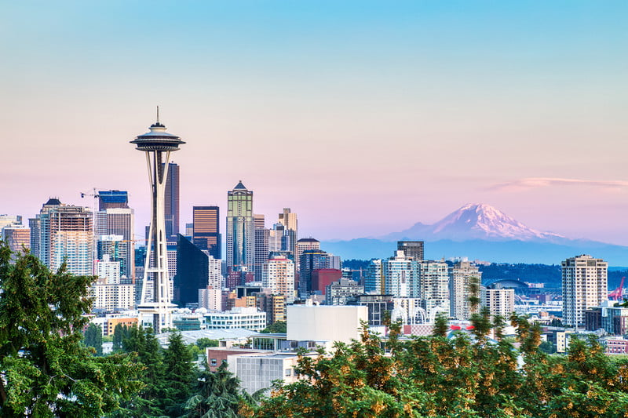

Welcome to Seattle!
Seattle is a city of beautiful scenery, great food, and what are sure to be lasting memories.

From: The Manual
Best things to do in Seattle
- Go sight-seeing at the Space Needle.
- Contribute to the Gum Wall at Pike Place Market.
- Take a ride to Bainbridge Island on the Seattle Ferries.
- Appreciate the art in the Olympic Sculpture Park.
Places to eat at Pike Place Market
- Daily Dozen Doughnut Company
- Piroshky Piroshky
- Beecher's Cheese
- The Original Starbucks